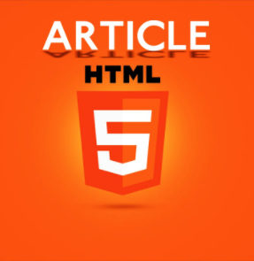

FOOTER
|
FOOTER:
El Elemento HTML Footer (>footer>) representa un pie de página para el contenido de sección más cercano o el elemento raíz de sección.
La etiqueta >footer> está pensada para contener información general sobre el documento, información que se suele poner al final del documento: autor, direcciones de contacto, licencia o condiciones de uso, enlaces a otros documentos relacionados, etc. |
|
ARTICULE:
El Elemento article de HTML (>article>) representa una composición auto-contenida en un documento, página, una aplicación o en el sitio, que se destina a distribuir de forma independiente o reutilizable, por ejemplo, en la indicación. Podría ser un mensaje en un foro, un artículo de una revista o un periódico, una entrada de blog, un comentario de un usuario, un widget interactivo o gadget, o cualquier otro elemento independiente del contenido.
La etiqueta >article> está pensada para agrupar el contenido de la página que forma una unidad en sí misma desde el punto de vista temático. Es decir, que un artículo debería poder publicarse y leerse como documento independiente, aunque una página puede estar formada por varios artículos de temática relacionada o no. |
 |